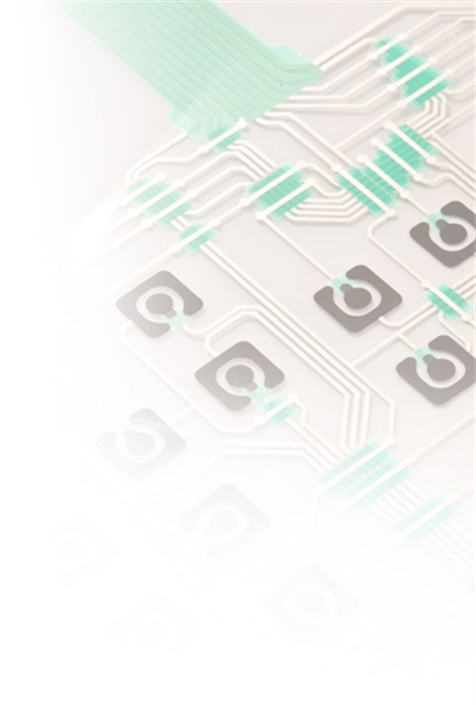
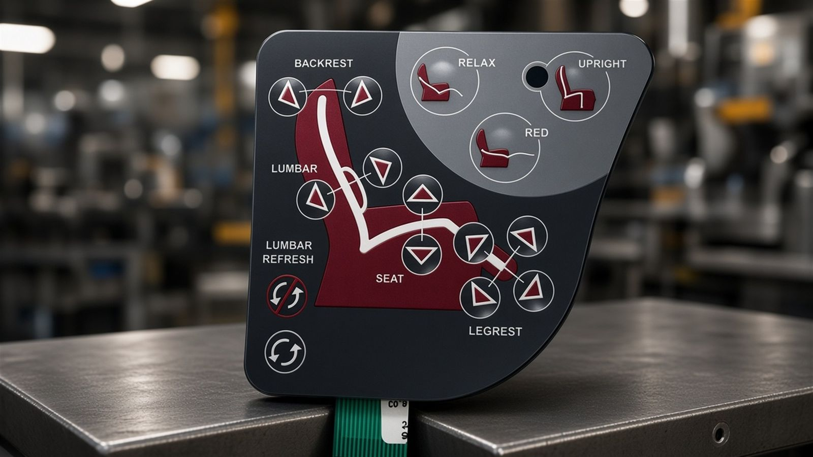
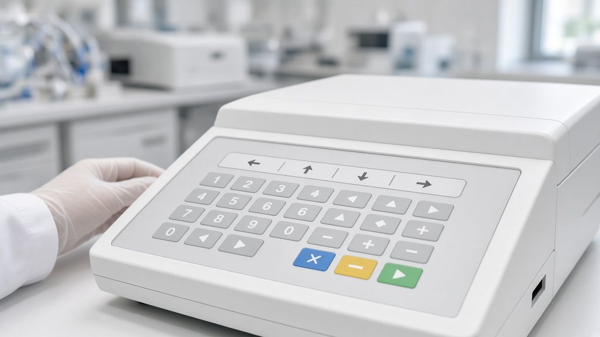
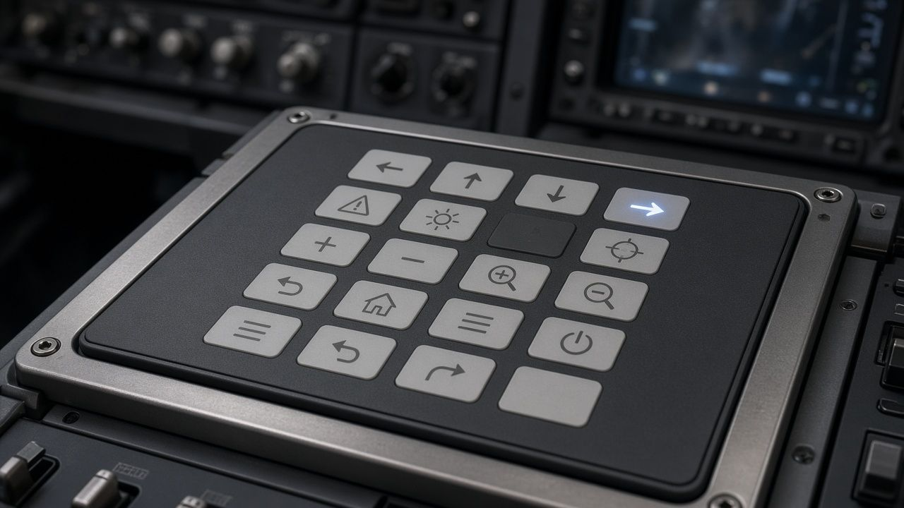
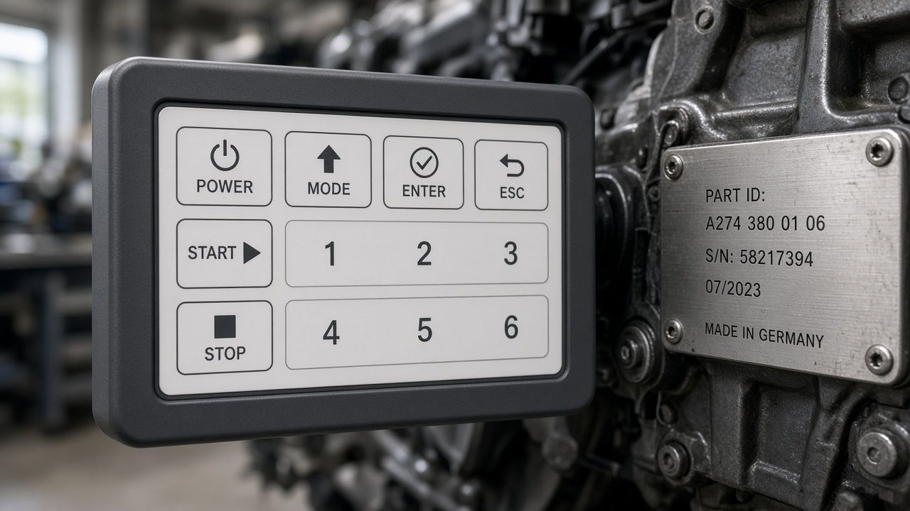
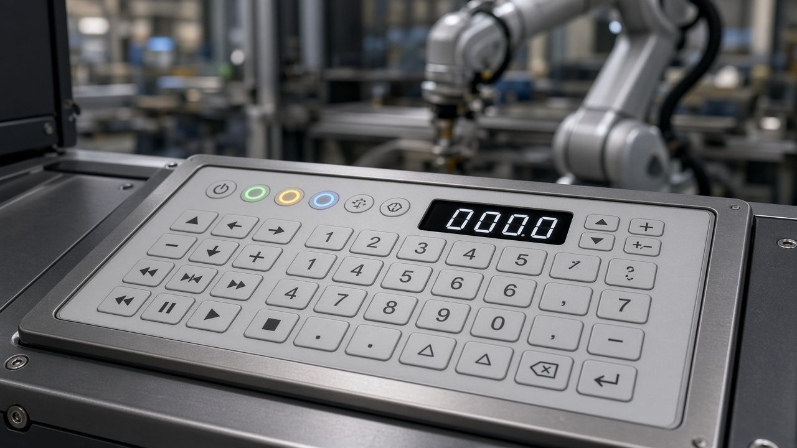
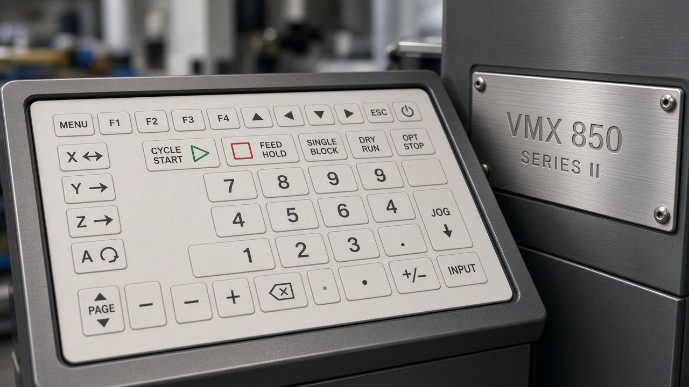
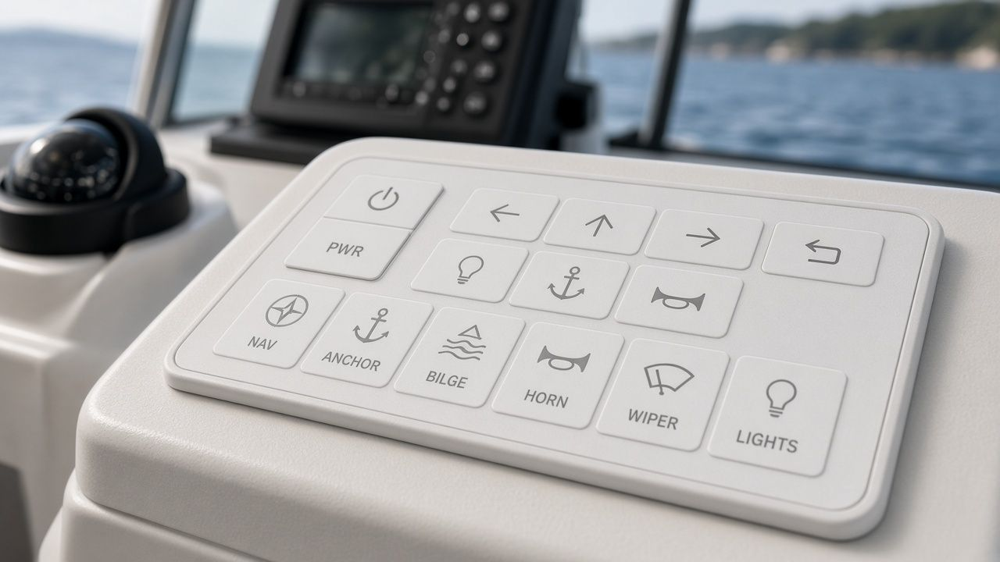
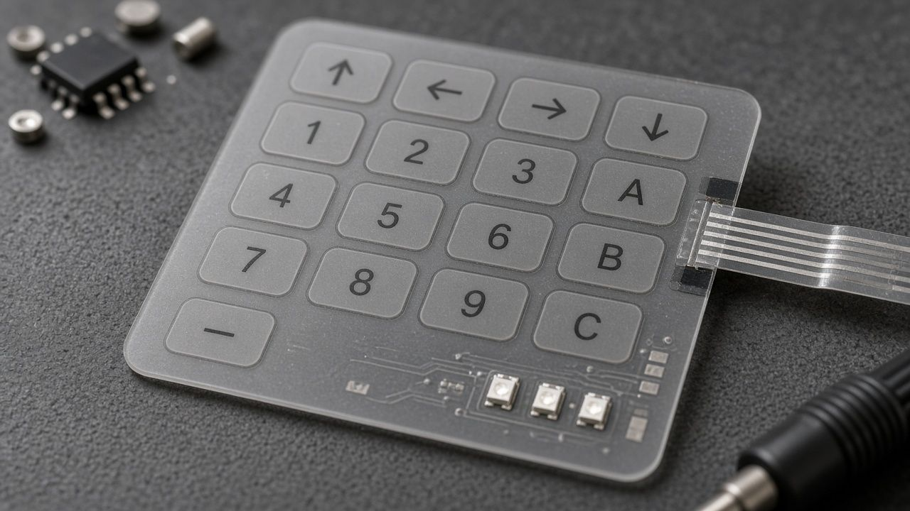
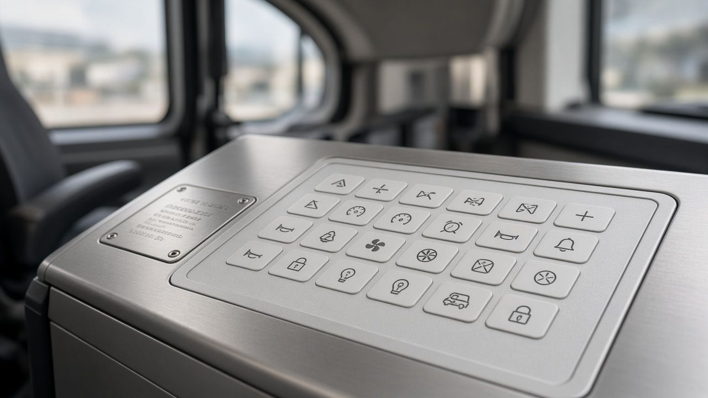

Ce que c’est
Un clavier à membrane est un assemblage de films (polyester ou polycarbonate) et d’adhésifs. La face du dessus porte le décor ; en dessous, des circuits souples assurent le contact électrique. Une languette souple, la limande, se branche directement sur votre électronique.
Par rapport à un clavier mécanique, il est plus fin, se nettoie facilement et prend la forme que vous voulez.
Pourquoi le choisir
On le choisit quand l’interface doit rester fiable, lisible et protégée, y compris dans un environnement difficile.
Nous couvrons toute la gamme : du clavier plat le plus simple jusqu’aux versions avec composants CMS, blindage ou éclairage. Le choix se fait avec vous, selon l’usage.


Spécifications
En bref
Quantités et délais sont précisés au devis, selon la pièce et la série.
Fichiers acceptés avec la demande : PDF, DXF, DWG, AI, JPG ou PNG. Un mot technique vous échappe ? Le glossaire.
| Matériaux | Polycarbonate (Lexan®) ou polyester, adhésifs, circuits souples |
|---|---|
| Épaisseur | À partir de 0,5 mm |
| Étanchéité | IP65 en standard |
| Connexion | Limande souple vers l’équipement |
| Options | LED, micro-switch, blindage électromagnétique ou électrostatique, guide-doigt, composants CMS, circuit chauffant |
| Séries | De la petite à la grande série |
| Quantité minimale | Sur devis |
| Délai de prototype | Sur devis |
Comparer
Les huit types de claviers à membrane.
| Type | Sensation | Lumière, affichage | Atout principal |
|---|---|---|---|
| Plat | Légère pression | LED en option | Fin et résistant ; étiquette interchangeable |
| À coupelles | Clic net, plusieurs duretés | Selon le clavier de base | 1 million d’actionnements garantis |
| Gaufré | Touches en relief ; clic possible | Selon option | Le doigt trouve la touche sans regarder |
| Rétroéclairé | Selon le clavier de base | LED de puissance, fenêtres | Lisible dans la pénombre |
| Électroluminescent | Selon le clavier de base | Lampe imprimée, lumière uniforme | Plan ou courbe, faible consommation |
| Afficheur 7 segments | Selon le clavier de base | Chiffres et lettres par LED | Moins de 2 mm d’épaisseur |
| Capacitif | Aucune touche mécanique | Rétroéclairage possible | Pas d’usure ; verre trempé ≥ 3 mm conseillé |
| Élastomère | Relief et creux en silicone | Selon option | Très robuste, isolant |
Tous nos claviers à membrane sont conçus étanches, IP65 en standard. Lire le guide « Choisir son clavier à membrane ».
Selon votre domaine
Ce produit chez vous.
Ouvrez le volet de votre secteur pour voir comment ce produit y est utilisé.
Médical

Sur un appareil médical, le clavier se nettoie, épouse le boîtier et reste étanche. Chaque pièce est testée avant de partir. Le domaine médical
Aéronautique et défense

Pour un équipement exposé, le clavier reste fin et lisible. Rétroéclairage ou électroluminescence s’ajoutent quand le poste manque de lumière. Le domaine aéronautique et défense
Automobile

Le clavier habille une commande d’équipement ou d’atelier : faible épaisseur, forme libre, décor imprimé. Le domaine automobile
Automatisation

Sur un pupitre, le clavier porte le clic des coupelles, un afficheur ou un rétroéclairage, selon le geste de l’opérateur. Le domaine automatisation
Machines-outils

Le clavier pilote la machine. Il côtoie souvent la plaque constructeur, dans une façade étanche. Le domaine machines-outils
Nautique

En milieu humide, le clavier reste étanche et lisible sur un pupitre de bord. Le domaine nautique
Électronique

Le clavier et le circuit souple forment un seul ensemble ; LED et CMS peuvent être intégrés. Le domaine électronique
Transports

Sur un équipement de transport, le clavier reste étanche et lisible ; la plaque d’identification complète la traçabilité. Le domaine transports
Pour les bureaux d’études
Tout ce qu’il faut pour chiffrer votre clavier.
Nos capacités en un tableau, ce qu’il faut nous envoyer, et les réponses aux questions qu’on nous pose le plus. Réponse à votre demande sous 48 h ouvrées.
Nos capacités
| Épaisseur | À partir de 0,5 mm |
|---|---|
| Étanchéité | IP65 en standard |
| Durée de vie | 1 million d’actionnements garantis sur les claviers à coupelles |
| Face décor | Polycarbonate (Lexan®) ou polyester, sérigraphié |
| Circuit | Encre argent sur film polyester ou polycarbonate, raccordé par limande |
| Lumière et affichage | LED de puissance, lampe électroluminescente, afficheur 7 segments |
| Options | Micro-switch, blindage électromagnétique ou électrostatique, guide-doigt, composants CMS, circuit chauffant |
| Découpe laser plastique | Tolérance inférieure à ± 0,3 mm |
| Contrôle | Test électrique de chaque pièce : touches, LED, résistances de boucle, courts-circuits |
| Séries | Prototype, puis petite ou grande série |
Pour un devis rapide, envoyez-nous
- Un plan ou un croquis coté (PDF, DXF, DWG, AI, JPG ou PNG)
- Le nombre et la disposition des touches
- La sensation voulue : légère pression, clic, relief ou tactile
- L’éclairage ou l’affichage souhaité
- L’environnement d’usage : nettoyage, projections, extérieur, gants
- La façon de se raccorder à votre électronique
- Les quantités : prototypes, puis série annuelle
- Le délai que vous visez
Questions fréquentes
Faites-vous des prototypes ?
Oui. Nous faisons un prototype, nous l’ajustons avec vous sur votre équipement, puis nous lançons la série.
Quels fichiers envoyer ?
Un plan ou un croquis coté en PDF, DXF, DWG ou AI. Une photo ou un croquis à main levée suffit pour un premier échange.
À partir de quelle quantité ?
De la petite à la grande série. Pour quelques pièces ou un décor à tester, l’impression numérique évite de fabriquer un cadre. Les quantités sont précisées au devis.
Pouvez-vous nous aider à concevoir le clavier ?
Oui, c’est notre première étape : choix du type de clavier, du marquage, du collage et de l’assemblage, même si le procédé n’est pas encore choisi.
Comment la qualité est-elle suivie ?
Notre système qualité est certifié ISO 9001 depuis 2000. Chaque pièce est testée électriquement puis contrôlée visuellement avant expédition.
Sous quel délai répondez-vous ?
Nous répondons aux demandes de devis sous 48 h ouvrées. Le délai de fabrication est précisé dans le devis.
Signez-vous un accord de confidentialité ?
Oui, sur demande, avant que vous nous envoyiez vos plans.
Dimensions maximales, températures d’usage et connecteurs : précisés avec vous selon le projet.